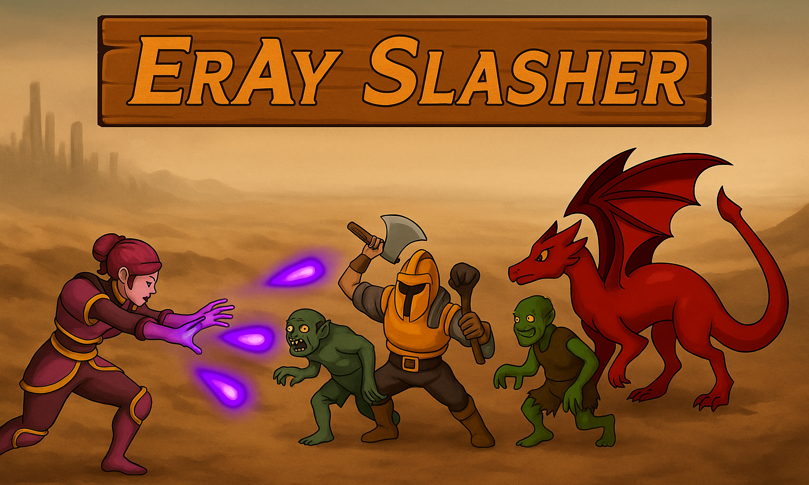

Proyectos
Haram Resorts
Este sistema de gestión de bases de datos relacional, enfocado en reservas hoteleras, permite integrar de manera sencilla pero completa, un sistema que permite hacer todo lo necesario para gestionar las reservas de tu negocio, desde gestión de usuarios, reservas, facturación, pruebas de estrés, optimización del sistema, mantenimiento de la B.D, copias de seguridad, logs, masking de datos personales, analisis de ventas y reservas y mucho más. En el enlace encontrarás toda la información necesaria.
Ver proyectoEJ Meteorological Systems
Este proyecto se basa en crear una versión simplificada de una estación meteorológica, permitiendo registrar en una base de datos diferente información relacionada con el clima en ciertos puntos, pudiendo integrar el codigo con hardware de medición real, tal como termometros, sensores de humedad, viento, etc. Este pryecto ofrece la base perfecta para alguien que quiera usar los sensores mencionades antes y registrar los datos de manera cómoda y fácil.
Ver proyecto
ErAy Slasher
ErAy Slasher es un videojuego estilo Roguelite Shooter en el que tu objetivo será eliminar ordas de enemigos de diferentes tipos y con diferentes habilidades. A medida que avanzas, tus armas y habilidades mejoran y bonificaciones temporales van apareciendo. El nivel del juego aumenta constantemente a medida que vas eliminando objetivos. Hecho con Unity y C#.
Ver proyecto